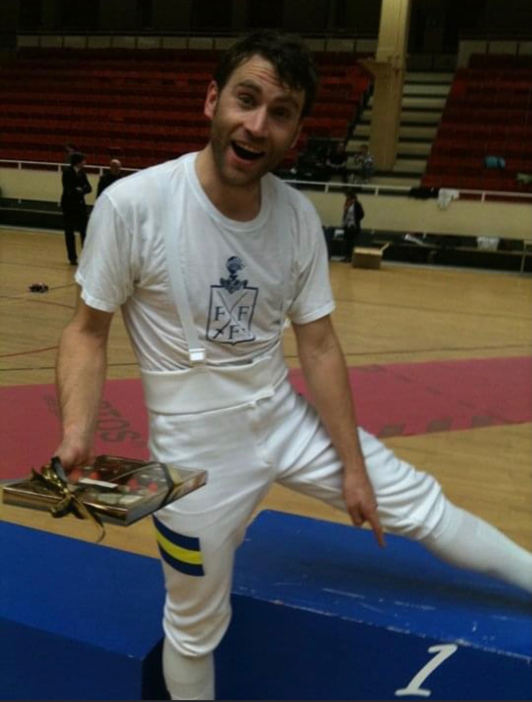
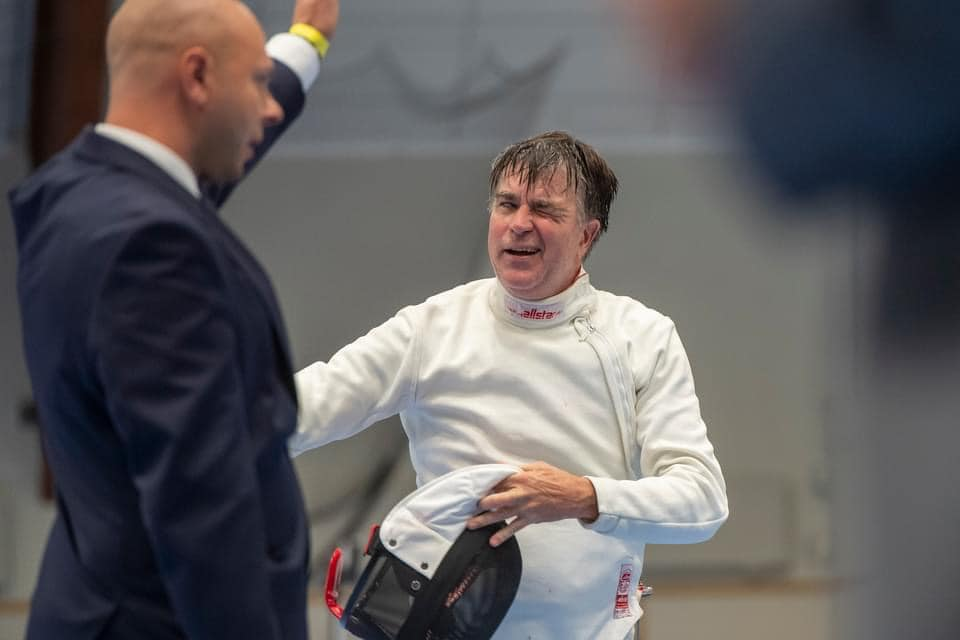

En efterlängtad start på KM
Sedan december förra året har spänningen ökat successivt till att nu anta nästan plågsamma nivåer. Alla har gått som på nålar i väntan på att KM äntligen ska börja. Och så i tisdags var tidpunkten inne – väntan var äntligen över!
Aldrig har dock vetskapen om att den annalkande KM-starten medfört så konstigt beteende. Helgen innan hade nämligen flera av klubbens fäktare åkt på sattelite VC i Åbo, men för att inte vara uttröttade inför KM-starten valde samtliga herrfäktare att kliva av tävlingen redan i 64-tablån. Att KM-starten skulle få sådana oönskade bieffekter var svårt att förutse. Sportcheferna kommer att vidta nödvändiga åtgärder för att detta inte ska upprepas.
Nåväl, till start kom 23 peppade fäktare. Dessvärre var David Ramsberg tvungen att bryta, varför endast 22 fäktare var kvar till det rafflande slutet, allt från den regerande mästaren Karsten och den som vunnit tävlingen flest gånger - Tor, till unga hungriga fäktare med siktet inställt på ett maktskifte i form av Ernest, Ian och allt däremellan. Särskilt glädjande var att se våra skickliga damfäktare Eden, Linnea och Louise som utan minsta tvekan gav sig i kast med alla som vågade koppla in. Många gladde sig också att få återse Holger som gjorde en storstilad comeback.
Ett intermezzo
En knapp halvtimme in i fäktningen kom en eftersläntrande fäktare in i tävlingen. Den olycklige hade inte uppmärksammat starttiden. Tävlingsledningen, som är känd för sin principfasthet, valde dock denna gång att fria och låta fäktaren delta. Detta beslut föll dock inte väl ut hos alla. När CH fick reda på detta blev han utom sig av vrede och protesterade häftigt.
Oinitierade betraktare hade lätt kunnat uppfatta att denna protest grundade sig i en rädsla för konkurrens. Men de som känner CH vet mycket väl hur högt han värdesätter ordning och reda och hans minutiösa omsorg över att lagar och regler ska följas till punkt och pricka och för detta förtjänar han all heder.

Tävlingsledningen höll dock fast vid sitt beslut varvid tävlingen kunde fortsätta utan fler incidenter. Men, detta är en lärdom för oss alla – det är viktigt att hålla tiden! Det är inte troligt att fäktare som kommer sent kan ges möjlighet att starta i framtida deltävlingar.
Bataljen
Sin vana trogen öppnade Karsten hårt och visade tydligt varför han är den regerande mästaren, men under kvällen fick han kännas vid det många mästare före honom har upplevt: att strålkastarljuset och de skyhöga förväntningarna kan vara en tung börda att bära. Han kämpade tappert, men fick till slut släppa ifrån sig några få segrar till Greger, Tor, Ian och Ernest. Efter dagen kunde Karsten dock glädja sig åt en imponerande 3:e plats.
Louise och Linnea, som båda gjort lysande resultat i höstens tävlingar visade att de måste tas på största allvar. Linnea slutade på en respektingivande 15:e plats en seger före Louise som slutade som nummer 16.
Kvällens giganter var dock Ernest och Tor. När alla matcher var fäktade hade de båda samlat ihop 18 segrar vardera så en omfäktning var nödvändig för att vaska fram en segrare. Även där blev det jämnt och vid ställningen 4-4 höll åskådarna andan. Slutligen blev det dock Tors rutin som fällde avgörandet. Ett styrkebesked av Tor, vars namn har fler inristningar i plaketten än någon annan.
I övrigt kan vi konstatera att Ian också gjorde en bra tävling. Han hade siktet inställt på pallplats, men denna gång missade han målet med ytterst knapp marginal.
Så här blev den totala resultatlistan
| Resultat från KM, deltävling 1 | ||
| Namn | Placering | Poäng |
|---|---|---|
| Tor Forsse | 1 | 25 |
| Ernest Cimborevics | 2 | 22 |
| Karsten Kaping | 3 | 19 |
| Andrés Gomez | 4 | 17 |
| Ian Bäckström | 5 | 15 |
| C-H Wendt | 6 | 13 |
| Jan Tivenius | 7 | 12 |
| Greger Forslöw | 8 | 11 |
| Thomas Schiöler | 9 | 10 |
| Mathias Elmfeldt | 10 | 9 |
| Lucas Marcos | 11 | 8 |
| Ludvig Dahlström | 12 | 7 |
| Holger Claesson | 13 | 6 |
| Peter Franzén | 14 | 5 |
| Linnea Eriksson | 15 | 4 |
| Louise Ulltjärn | 16 | 3 |
| Anders Brunelius | 17 | 2 |
| Francesco Palletta | 18 | 1 |
| Erik Lahomaa | 19 | 1 |
| Teodor Dahlin | 20 | 1 |
| Olof Vrethammar | 21 | 1 |
| Eden Rose Renda | 22 | 1 |
Och såhär ser listan ut för damklassen:
| Resultat i damklassen, deltävling 1 | ||
| Nr | Namn | Poäng |
|---|---|---|
| 1 | Linnea Eriksson | 4 |
| 2 | Louise Ulltjärn | 3 |
| 3 | Eden Rose Renda | 1 |
Men även om dammet ännu inte har lagt sig efter den första deltävlingen är det inte tid för att vila…nej om redan tre veckor, torsdagen den 20 oktober är det dags igen. Då kommer det säkert bli en ännu tätare tillställning. Så träna hårt!